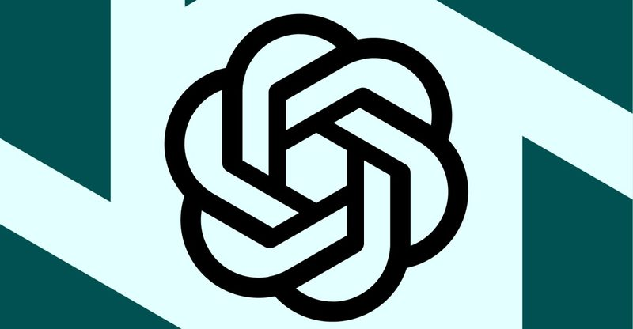
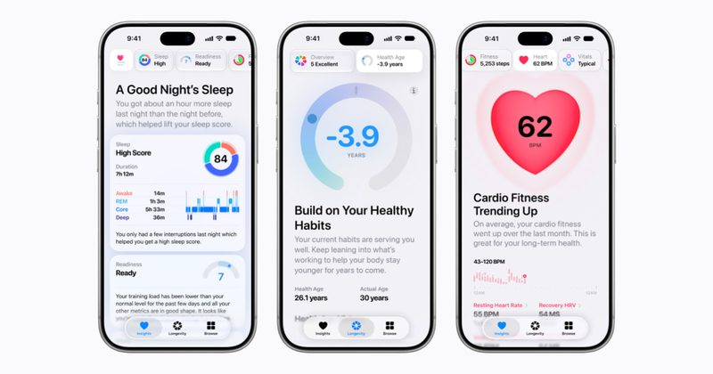
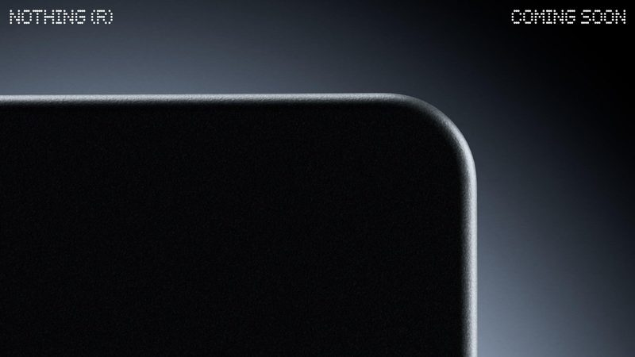
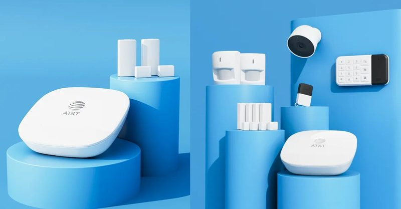
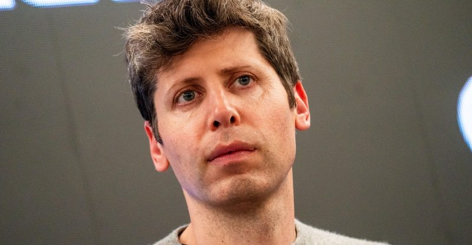
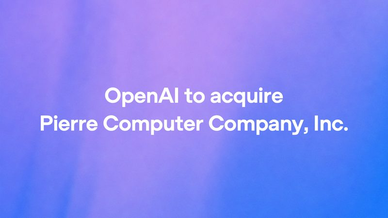

今日頭條
ChatGPT 能做 GIF 動圖 PLUS：Apple 新版健康 App 支援繁體中文
本期重點：OpenAI 推出 Images 2.6，ChatGPT 能用一句話或一張照片做出 GIF；Apple 新版健康 App 加入繁體中文。另有美國期中選舉的資料中心議題、Uber 揭露 AI 代理叫車數字、Nothing 無螢幕 AI 裝置、AT&T 保全系統接上 Gemini、記憶體缺貨與 OpenAI 收購案。
📋 2026/11/5（四） 共 8 則 ChatGPT 推出 Images 2.6，一句話或一張照片就能做成 GIF Apple 新版健康 App 加入繁體中文，AI 整理睡眠與心臟數據 美國期中選舉：反對資料中心的候選人與公投大多勝出 Uber：上一季只有 4 趟車是 AI 代理幫人叫的 Nothing 首款「AI 原生」裝置 12 月出貨，沒有新螢幕 AT&T 居家保全接上 Gemini，可用一句話搜尋監視器畫面 記憶體被 AI 吃光？Altman 改名「Ram Altman」澄清發言 OpenAI 收購開發工具公司 Pierre，強化 Codex 寫程式與審查 
圖：The Verge 新上線 #1 ChatGPT 推出 Images 2.6，一句話或一張照片就能做成 GIF The Verge 11 月 4 日（美國時間）報導，OpenAI 隨新圖像模型 Images 2.6 讓 ChatGPT 能直接用文字或上傳的照片生成 GIF 動圖，做好後還能調整播放速度、逐格修改並分享。OpenAI 表示 Images 2.6 也讓出圖速度變快，ChatGPT 與 API 每週產生的圖片已超過 40 億張，9 月時約 30 億張。
💡 跟你有什麼關係： 想做聊天用的梗圖、生日祝福或簡單的商品動態圖，不必再另外找剪輯軟體，在 ChatGPT 裡描述一下就能完成，也能一格一格修到滿意。
⚠️ 本則為二手報導（The Verge），未找到 OpenAI 官方公告頁；官方表示功能正陸續推送給所有 ChatGPT 與 Codex 用戶，不一定每個帳號立刻看得到。每週 40 億張是官方自報數字，涵蓋所有圖片用途。
📰 原始來源：The Verge（2026-11-04） ↗ 
圖：Apple 新上線 #2 Apple 新版健康 App 加入繁體中文，AI 整理睡眠與心臟數據 Apple 11 月 3 日（美國時間）宣布，以 Apple Intelligence 打造的新版「健康」App 擴大支援語言，包含繁體中文、簡體中文、日文、韓文等。新版有「洞察」分頁整理心臟、睡眠、體能等數據並給建議，「長壽」分頁的 Health Age 會用 Apple Watch 數據估算身體狀態相對於實際年齡；另可用 iPhone 相機加 Apple Watch 在家測柔軟度、肌力與平衡。
💡 跟你有什麼關係： 台灣用戶之後可以直接用中文看懂自己的睡眠、心率趨勢與建議，不用再自己對照英文介面；居家動作檢測也讓不上健身房的人能定期了解體能狀況。
⚠️ 目前只在 iOS 27.3 開發者測試版，官方說今年稍晚才以免費更新推給一般用戶；需支援 Apple Intelligence 的 iPhone 或 iPad，Health Age 需要 Apple Watch，部分功能限 18 歲以上，各地區可用功能可能不同。這不是醫療診斷工具。
📰 原始來源：Apple Newsroom（2026-11-03） ↗ 圖：WIRED／Anjali Nair／Getty Images 政策 #3 美國期中選舉：反對資料中心的候選人與公投大多勝出 WIRED 11 月 4 日報導，美國 11 月 3 日期中選舉中，主打限制或暫停興建 AI 資料中心的候選人在參議院、州長與眾議院多場選戰勝出。NBC 調查顯示近四分之一選民認為資料中心是投票的「關鍵」因素；9 個州的資料中心相關公投，多數選擇否決新建案或通過暫停令。
💡 跟你有什麼關係： AI 服務背後要靠大量資料中心，美國多地若收緊興建與稅務優惠，可能影響 AI 公司擴建速度與成本，最後也可能反映在 AI 服務的價格與供應上。
⚠️ 本則為二手報導（WIRED）；部分選區在報導當下尚未由美聯社正式確認結果，政策實際怎麼改還要看新任官員上任後的作法。
📰 原始來源：WIRED（2026-11-04） ↗ 圖：The Verge／Cath Virginia／Getty Images 數字 #4 Uber：上一季只有 4 趟車是 AI 代理幫人叫的 Uber 高層 11 月 4 日（美國時間）在財報電話會議上首次揭露，2026 年第三季由第三方 AI 代理安排的乘車只有 4 趟；Uber Eats 在萬聖節那一週由 AI 代理下的訂單約 500 筆。The Verge 引述的對照基準是 3.2 億筆乘車與外送。執行長 Dara Khosrowshahi 表示仍會與第三方 AI 公司合作，但認為用戶還是偏好直接用 Uber App。
💡 跟你有什麼關係： 雖然各家都在推「叫 AI 幫你訂車訂餐」，實際用的人還非常少；一般人現階段直接用原本的 App 仍是最穩的做法，AI 代理比較像嘗鮮。
⚠️ 本則為二手報導（The Verge，依財報電話會議內容），Uber 官方新聞稿未列出這組數字；數字只代表 Uber 一家平台、一季的情況。
📰 原始來源：The Verge（2026-11-04） ↗ 
圖：Nothing（via The Verge） 新聞 #5 Nothing 首款「AI 原生」裝置 12 月出貨，沒有新螢幕 手機品牌 Nothing 執行長 Carl Pei 11 月 4 日（美國時間）在 X 上宣布，公司第一款「AI 原生」產品將在 12 月出貨。他形容這是一個工具，「沒有新的螢幕，也不可能只做成 App」，同時附上一張只露出黑色圓角的預告圖。
💡 跟你有什麼關係： 繼 AI 胸針、項鍊之後，又一家消費電子品牌要推無螢幕 AI 裝置；想買 AI 新玩具的人，可以等產品細節公布再判斷值不值得。
⚠️ 本則為二手報導（The Verge，引 Carl Pei 的 X 貼文）；Nothing 尚未公布產品名稱、外型、價格與販售地區，外界對它是否為錄音或穿戴裝置都只是猜測。
📰 原始來源：The Verge（2026-11-04） ↗ 
圖：AT&T（via The Verge） 新上線 #6 AT&T 居家保全接上 Gemini，可用一句話搜尋監視器畫面 AT&T 11 月 4 日宣布，旗下 Connected Life 居家保全系統是第一個整合 Google Home Premium 進階 Gemini 功能的保全產品。Gemini 會用文字描述攝影機拍到的事件，例如誰送來包裹、送了幾件；用戶可以直接問「昨晚是什麼把院子挖亂了？」來搜尋錄影，每天還有一份「Home Brief」整理家中動態。
💡 跟你有什麼關係： 裝了家用監視器的人，以後不必一段段拉時間軸找畫面，用問的就能找到；這也是 AI 從聊天機器人走進居家設備的例子。
⚠️ 目前只在美國，且需要每月 29.99 美元的 Professional 方案；AT&T 也提醒 AI 回覆要自行核對，結果可能有誤。台灣是否會有類似服務未公布。
📰 原始來源：AT&T（2026-11-04） ↗ 
圖：The Verge／Bloomberg／Getty Images 觀點 #7 記憶體被 AI 吃光？Altman 改名「Ram Altman」澄清發言 OpenAI 執行長 Sam Altman 先前在 Cheeky Pint Podcast 說，讓每個人把全球有限的 DRAM 放在自己電腦裡、只用到 5% 的時間「很糟糕」，引發批評。美國選舉夜（11 月 3 日晚間，美國時間）他在 X 上把名字改成「Ram Altman」，表示發言被斷章取義，他其實希望全世界有大量記憶體，也一直主張擴大記憶體產能。
💡 跟你有什麼關係： AI 資料中心大量搶購記憶體，已讓電腦與零件漲價；Intel 預估缺貨至少延續到 2027 年，SK 海力士更預測可能拖到 2030 年，想換電腦的人會直接感受到。
⚠️ 本則為二手報導（The Verge）；Altman 的說法是個人貼文，不代表記憶體供需會因此改變，缺貨時間是 Intel 與 SK 海力士的預估。
📰 原始來源：The Verge（2026-11-04） ↗ 
圖：OpenAI 資金 #8 OpenAI 收購開發工具公司 Pierre，強化 Codex 寫程式與審查 OpenAI 11 月 4 日宣布將收購 Pierre Computer Company，這家公司開發 Code Storage 服務與多款開源開發工具，Codex App 裡瀏覽檔案與查看程式差異的 Trees、Diffs 元件就是它做的。OpenAI 表示 Pierre 的開源專案會維持開源，Code Storage 客戶在交易完成後仍可繼續使用。
💡 跟你有什麼關係： AI 寫程式工具競爭越來越激烈，大公司正把周邊工具買進來；對一般人來說，這代表用 AI 做網站、小工具的流程可能會更順，但選擇也可能更集中在少數平台。
⚠️ 交易金額未公布，仍需主管機關核准等條件，完成前兩家公司各自獨立營運。
📰 原始來源：OpenAI（2026-11-04） ↗ ✅ 2026/11/5（四） 可以做： 近期想買電腦或升級記憶體的人，可以先多比價幾家；Intel 預估記憶體缺貨至少延續到 2027 年，價格短期內可能不容易回落。
🗂️ 過去 14 天